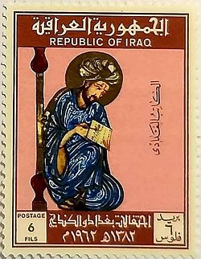

Welcome to the Mathematical World!
Al-Kindi
Philosopher of the Arabs and Pioneer of Islamic Science
Al-Kindi (c. 801 – c. 873 CE), known in Latin as Alkindus, was an Arab polymath who made lasting contributions across philosophy, mathematics, astronomy, medicine, cryptography, music theory, and more. Born in Kufa and later active in Baghdad, he worked under the Abbasid Caliphate and was closely associated with the House of Wisdom. Often referred to as the “Philosopher of the Arabs,” he played a key role in introducing Hellenistic philosophy and science to the Islamic world.
In mathematics, Al-Kindi wrote over a dozen treatises covering arithmetic, geometry, and the Hindu-Arabic numeral system. He helped systematize Indian numerals and was among the first to explain their practical application in arithmetic operations. His mathematical writings laid a foundation for later Islamic scholars such as al-Khwarizmi and al-Farabi.
Al-Kindi also made pioneering contributions to cryptography. He is credited with the earliest known use of frequency analysis in his treatise “On Deciphering Cryptographic Messages”, where he described how letter frequencies in a given language could be used to break ciphers — a foundational method still relevant in modern cryptanalysis.
In optics and geometry, he wrote about reflection and refraction of light, anticipating ideas that would later be elaborated by Ibn al-Haytham. His interest in scientific precision extended to music theory as well, where he applied mathematical ratios to musical intervals, linking harmonics to arithmetic.
Al-Kindi was also a renowned philosopher who harmonized Greek philosophy, particularly Aristotelianism and Neoplatonism, with Islamic theology. He believed that reason and revelation were compatible, and used logic to support metaphysical and cosmological arguments. He was instrumental in translating and commenting on Greek philosophical texts, especially those of Aristotle, contributing to the foundation of Islamic philosophy (falsafa).
- Promoted the use of Hindu-Arabic numerals and decimal calculation
- Developed the first method of frequency analysis in cryptography
- Applied mathematics to music, optics, and astronomy
- Translated and integrated Greek philosophical texts into Islamic thought
Al-Kindi’s work influenced not only the Islamic world but also medieval Europe through later Latin translations. His interdisciplinary approach marked a turning point in the development of science, and he is remembered as a foundational figure in both philosophy and mathematics during the Islamic Golden Age.